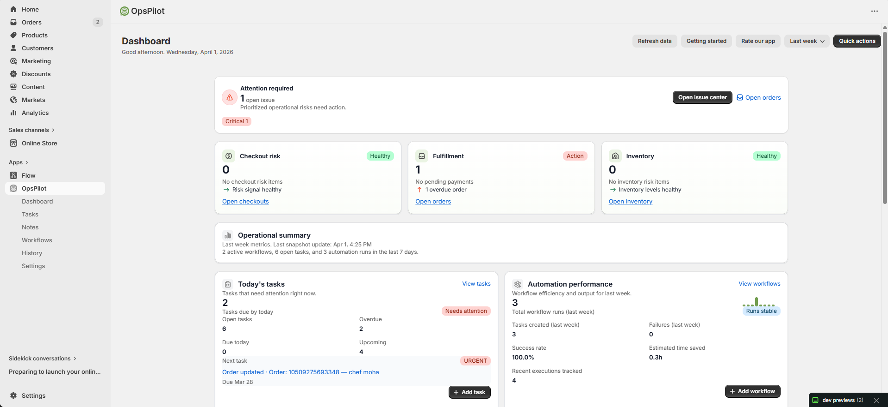

Getting Started
Last updated on 1 April 2026
Install OpsPilot, take a quick tour, and create your first note, task, and workflow in minutes.
OpsPilot
Up and Running in Minutes.
Install, set up, and start automating your Shopify store — no coding required.

One-click Shopify install
OpsPilot in Apps sidebar
Quick sidebar access
Store overview stats
Insights & guides area
Team auto-detection
Installing OpsPilot
Go to the Shopify App Store and search for OpsPilot
Click Add app
Add OpsPilot to your Shopify store from the App Store
Review the permissions OpsPilot needs (read orders, products, customers, inventory, checkouts)
Click Install app
Confirm permissions and install OpsPilot
You'll be redirected to the OpsPilot dashboard inside your Shopify Admin
Shopify admin navigation
OpsPilot in Apps sidebar
Store analytics overview
Getting started resources
OpsPilot runs inside your Shopify Admin — there's no separate website to log in to. Just click the app from your Shopify sidebar.
First-Time Setup
When you install OpsPilot for the first time, the app automatically:
- Creates your user account (using your Shopify staff email)
- Sets up default task statuses (Pending, In Progress, Completed, etc.)
- Detects your store timezone and currency
- Prepares sample workflow templates to get you started
Quick Tour
After installation, you'll see the main navigation on the left sidebar:
| Menu Item | What It Does |
|---|---|
| 📊 Dashboard | Your store health overview: KPIs, task stats, workflow performance |
| 📠Notes | Create and manage notes attached to orders, products & customers |
| ✅ Tasks | Create tasks, assign to team members, track progress |
| âš¡ Workflows | Set up automations that run when events happen in your store |
| âš™ï¸ Settings | Manage your team, task preferences, integrations & more |
| 💳 Billing | View your current plan and upgrade options |
| 📋 History | Activity log — see everything that happened in the app |
Your First Note
Create your first note in under 30 seconds:
Click Notes in the sidebar
Click the Create Note

Opens the note editor for your first note
buttonChoose an entity type (e.g., Order)
Select a specific order from the dropdown
Type your note content — you can use bold, italic, lists, and more
Click Save
Your First Task
Click Tasks in the sidebar
Click Create Task
Opens the task form to create your first task
Fill in the Title (e.g., "Follow up with customer about refund"), Priority, Due Date, and Assign To
Click Save
Start creating tasks
Priority & due dates
Quick task creation
Assign team members
Your First Workflow
Click Workflows in the sidebar
Click Create Workflow
Opens the workflow wizard — choose Event-based or Scheduled
Choose a template
Pick from 28+ pre-built workflow templates
(e.g., "New Order → Create Task") or start from scratchConfigure the Trigger (what starts the workflow), Conditions (optional filters), and Actions (what happens)
Click Save & Activate
Save your workflow and set it to active immediately
Choose workflow type
'Scheduled' option
Workflow stats overview
Templates or from scratch
Use the "Test with latest order"
Run a test using real store data without waiting for an event
button to try your workflow without waiting for a real event.Inviting Team Members
Your Shopify staff members are automatically detected by OpsPilot. To manage who can access the app:
Go to Settings in the sidebar
Scroll to Team Management
Your Shopify staff members appear automatically — assign roles and permissions as needed